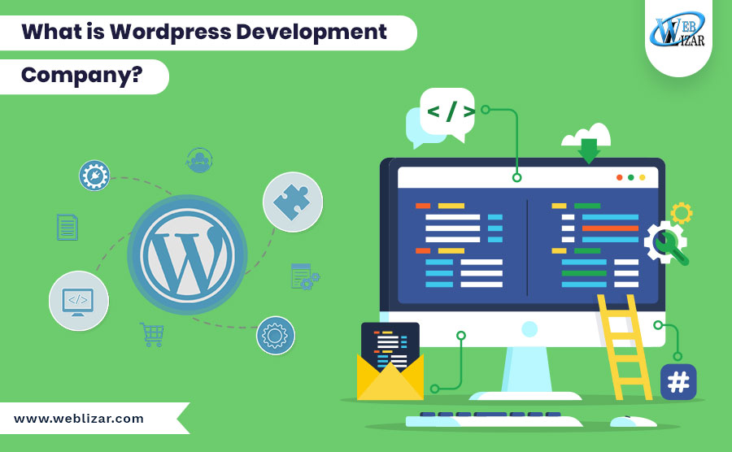

What is a WordPress developer?

Whereas a developer is someone who knows how to take a certain set of tools and create something with it that sits on top of WordPress or extends WordPress, this is a person who knows how to find something that gives your site a certain look and feel (a theme), and how to install certain plugins (to introduce functionality), but they aren’t capable of writing code on their own to bring the project to life.
The programming languages needed:
- PHP
- HTML
- CSS
- MySQL database